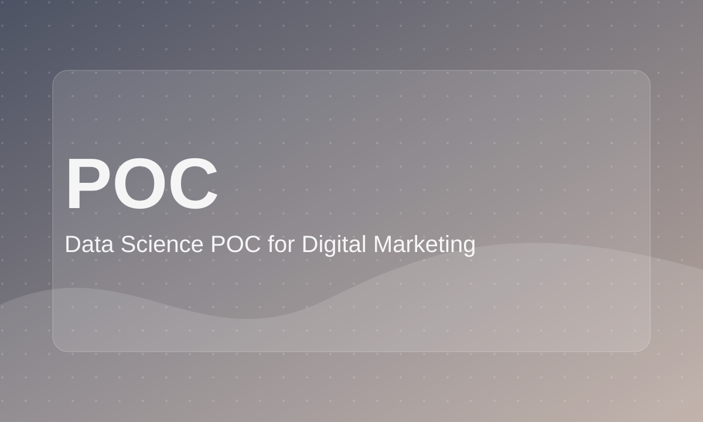

Data Science POC for Digital Marketing
Data science strategy case study showing how analytics and machine learning can support digital marketing decisions.

Role: Data Analyst / Data Science Consultant
Tools: Presentation, research, analytics planning
Project Type: Interview case study
Focus: A/B testing, SEO, keyword research, segmentation, sentiment analysis
Business Problem
The business wanted to understand how data science could be applied to digital marketing services and client campaigns.
Goal
Create a proof-of-concept roadmap showing practical data science use cases for marketing and SEO.
What I Did
- Researched data science applications in digital marketing.
- Proposed practical use cases relevant to marketing teams.
- Defined business problems, hypotheses, methods, and success metrics.
- Explained how experiments and models could support decision-making.
Key Analysis / Visuals
- A/B testing framework
- Keyword research model concept
- Customer segmentation profiles
- Sentiment analysis example
- POC roadmap
Outcome / Recommendations
Presented a practical roadmap for using data science in marketing, including experiment design, success metrics, and production considerations.